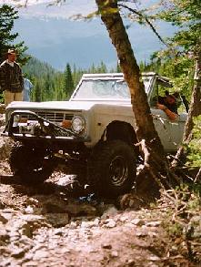
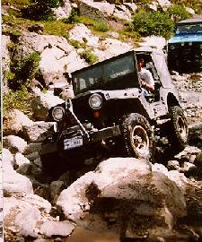
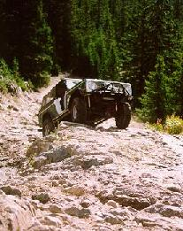

Rain...that is what it managed to do most of the way over to Holy Cross for Paul, Cindy, Jake and Lydia...when they arrived they found Robin. Dave, Buffy, Cari, Curtis and his dad Harry, Doug and Justin. Ray, Leah, Rose and Nathan joined us later that night...next morning dawned cool with a bit of a cloud cover that soon burned off as we trekked up the Holy Cross Road.
 For most of the trip up we had no problems when we reached the tree we were joined by Terry and Sean who had managed to catch up with us...Sean now has his rig up and running but managed to get a ding in the door at the tree. Most of us didn't have too many problems until Frenchman creek and there is was really just a more interesting crossing now.
But just before the old mud bog we did find a spot that caused some concern and some decided to use the mud way instead of over the rocks...we did have one very adventurous person who dared the rocks and was very close to being a bit too high, but backed down and made it through all right.
When we got to the city some of us choose to stay behind while the more adventurous continued up to the lake...Jake had some problems and Dave managed to break an axle again...Jake sounded liked he had a monster truck on the way back. Those of us back at the city could hear the others calling out directions which sometimes caused us to wonder what was going on...Rosie kept herself busy by making mud pies, Nathan managed to attract the mosquitoes both of them had fun watching the chipmunk who would steal up to the back of the bronco and take the food that had fallen during lunch.
After a fun filled afternoon we headed back to have Paul run into trouble on Frenchman and had to be winched off the rocks, ran into some other 4 wheelers who were headed up to the city...one was not too happy about the delay, waiting for all of us to come down. the only other problem was a flat tire. 
Sunday found Paul, Jake, Lydia, Doug, Justin and Ray headed for Yoder Gulch...Dave stayed behind to ready the trailer for an early start home. Leah, Rosie and Nathan decided to go for a walk to the river. Cindy stayed in camp working on some crafts.
Yoder Gulch was a short trip from the mountain top directly east of
the camp site, to a conclusion at Camp Hale. Although it was not a very
technically challenging trip the drive meandered its way down the creek
next to beaver dams and beautiful green meadows. There were a few mud
bogs and side hills to make things interesting, but otherwise it was a
beautiful drive. After leaving the creek bottom the road became an
easy shelf road traveling through a long aspen grove and then opening up
into a open field directly above Camp Hale. The last 15 to 20 feet of
the trail was almost straight up and down ending next to the railroad
tracks. the highway and back to camp.
Total trip time was about 3 hours making it a nice get-away-day trip.
